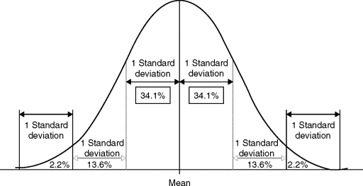
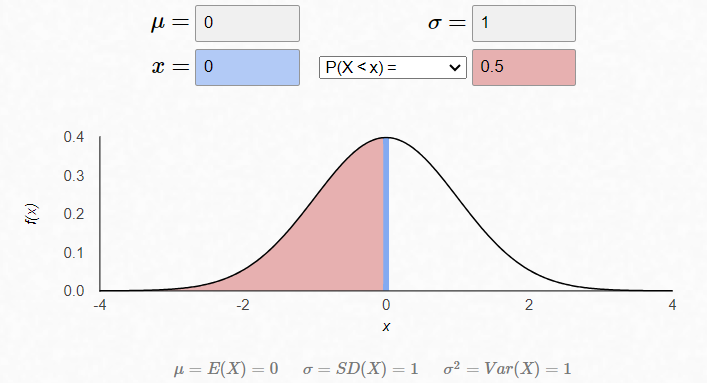
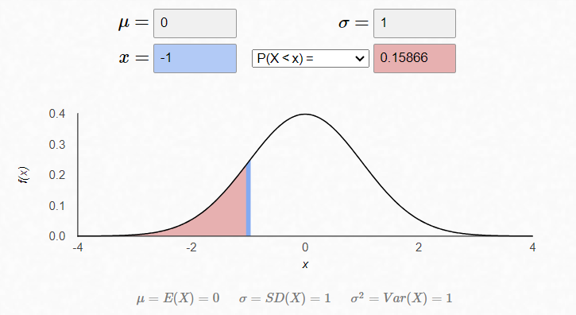
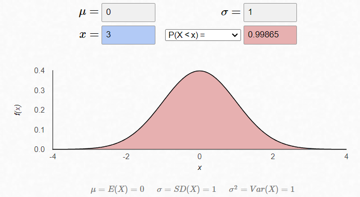

Normal distributions are important in statistics and are often used to represent real-valued random variables whose distributions are not known. Their importance is partly due to the central limit theorem.
In statistics, a normal distribution or Gaussian distribution is a type of continuous probability distribution for a real-valued random variable that is referred as N(μ,σ^2 ). The general form of its probability density function is:
The parameter µ is the mean or expectation value of the distribution, the parameter is its standard deviation and its variance is σ^2.
A normal distribution is sometimes informally called a bell curve because of its shape: symmetric and unimodal with tails that appear to extend to positive and negative infinity. In a normal curve, approximately 68% of the values fall within one standard deviation of the mean, 95% fall within two standard deviations, and 99.7% fall within three standard deviations.

Moreover, Gaussian distributions have some unique properties. For instance, any linear combination of a fixed collection of normal deviates is a normal deviate.
Standard normal distribution
The simplest case of a normal distribution is known as the standard normal distribution. This is a special case when μ=0 and σ=1, and it is described by this probability density function:
Where z is a continuous random variable that has a mean of 0 and a variance and standard deviation of 1.
The
is there to make sure that the area under the PDF is equal to one.
General normal distribution
Every normal distribution is a version of the standard normal distribution, whose domain has been stretched by the standard deviation and then translated by the mean value:
Applications
The Gaussian distribution has several utilities and applications, including:
Modeling Data: The Gaussian distribution is often used to model and describe real-world data. Many natural phenomena follow a normal distribution pattern. When data is approximately normally distributed, it allows for the use of various statistical techniques.
Statistical Inference: Many statistical tests rely on the assumption of normality, which simplifies the mathematical procedures and enhances the interpretability of results.
Machine Learning: Gaussian distributions are used in various machine learning algorithms. For example, Gaussian Naive Bayes is a classification algorithm that assumes that features follow a Gaussian distribution. Also, Gaussian Mixture Models are used for clustering and density estimation in unsupervised learning.
Process Control: Gaussian distribution is used to monitor and control processes. It helps in identifying deviations and anomalies in production, ensuring products meet quality standards.
Risk Assessment: In finance, the Gaussian distribution is often used to model asset returns and assess financial risk. The concept of value at risk (VaR) relies on the assumption of normally distributed returns.
Physics and Engineering: The Gaussian distribution is essential in various areas of physics and engineering, such as thermodynamics, quantum mechanics, and the modeling of random processes.
Social Sciences: Gaussian distributions are used in various social science disciplines to analyze and model human behaviors, survey data, and psychological test scores.
Simulation



Bibliography:
Lecture notes from the lesson of the statistics course